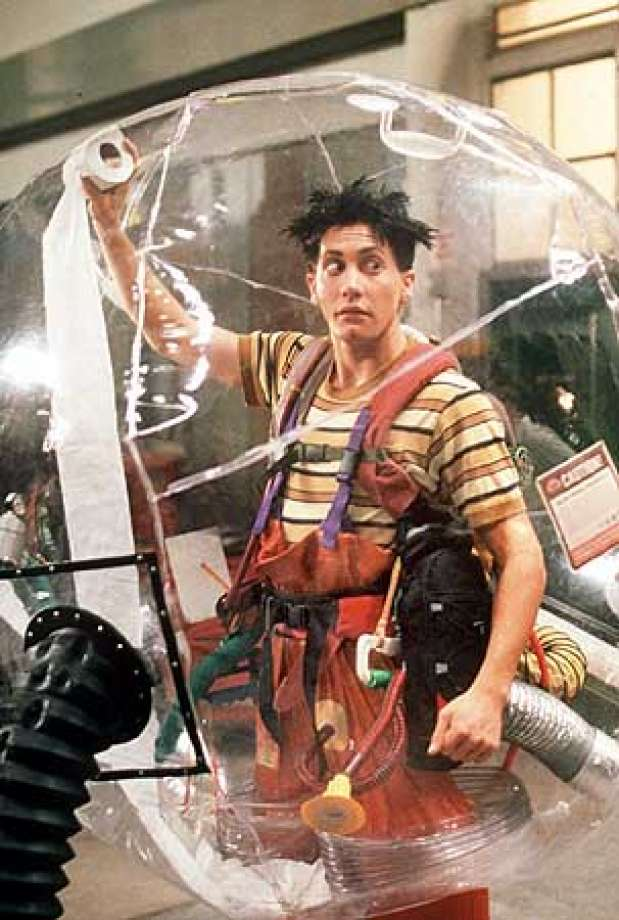

This is my first valid HTML page.
Mars is the fourth planet from the Sun and
the second-smallest planet in the Solar System after Mercury. In English,
Mars carries a name of the Roman god of war and is often referred to as the
'Red Planet'.[15][16] The latter refers to the effect of the iron oxide prevalent on Mars' surface, which gives it a reddish appearance distinctive among the astronomical bodies visible to the naked eye.[17]
Mars is a terrestrial planet with a thin atmosphere, having surface features reminiscent both of the impact craters of the Moon and the valleys, deserts, and polar ice caps of Earth.
first-word  second-word